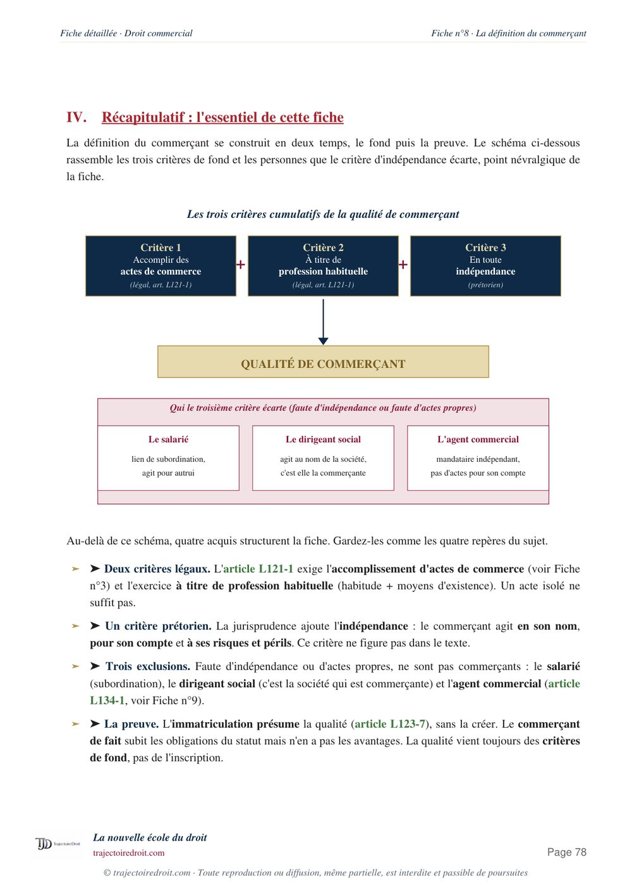

L'arrêt du 20 octobre 1920 sur la solidarité commerciale, expliqué simplement
La chambre des requêtes de la Cour de cassation, le 20 octobre 1920, pose que la solidarité entre codébiteurs se présume en matière commerciale, par dérogation à l'article 1202 du Code civil (aujourd'hui 1310) qui l'exclut en droit civil. Un usage antérieur au Code de commerce, fondé sur l'intérêt du créancier et le crédit des débiteurs, justifie cette présomption, toujours appliquée aujourd'hui par la Cour de cassation.

L'essentiel en une phrase
Le 20 octobre 1920, la chambre des requêtes de la Cour de cassation juge que la solidarité entre codébiteurs se présume en matière commerciale, alors qu'elle ne se présume jamais en droit civil. Le créancier, celui à qui l'argent est dû, et les débiteurs, ceux qui le doivent, sont ici plusieurs à devoir la même somme. À l'époque, l'article 1202 du Code civil disposait que « la solidarité ne se présume point », et qu'elle devait résulter d'une clause expresse ou d'un texte. Cette règle figure aujourd'hui à l'article 1310 du Code civil, avec la même portée.
La Cour de cassation écarte pourtant cette exigence dès qu'une dette est commerciale. Elle s'appuie sur un usage antérieur au Code de commerce lui-même, c'est-à-dire une pratique plus ancienne que la loi écrite, selon laquelle chaque codébiteur d'une dette commerciale peut être poursuivi pour le tout, sans qu'aucune clause ne le prévoie. Cet usage déroge ouvertement à un texte de loi, et il continue malgré tout de s'appliquer près d'un siècle plus tard.
Cette présomption ne joue que pour la solidarité passive, entre débiteurs. La solidarité active, entre créanciers, ne se présume jamais, même en matière commerciale. Elle suppose enfin toujours une vraie pluralité de débiteurs tenus à la même dette envers le même créancier. La Cour de cassation l'a d'ailleurs encore rappelé en 2024.

Fiche complète
Droit commercial L3
Les faits, une dette commerciale sans clause de solidarité
Dans cette affaire, un créancier s'oppose à plusieurs personnes engagées ensemble envers lui pour une dette née d'une opération commerciale. Rien dans leur engagement ne prévoit expressément qu'elles répondraient solidairement de cette dette, c'est-à-dire que le créancier pourrait réclamer la totalité de la somme à une seule d'entre elles, à charge pour elle de se retourner ensuite contre les autres. En droit civil de l'époque, l'absence d'une telle clause aurait suffi à limiter chaque débiteur à sa seule part.
Le créancier réclame cependant le paiement intégral de la dette à l'un des codébiteurs seul. Il s'y oppose et soutient qu'à défaut de clause de solidarité, il ne doit répondre que de sa part virile, c'est-à-dire de la part qui lui revient personnellement dans la dette commune.
La procédure et le pourvoi
Les juges du fond accueillent la demande du créancier et condamnent le débiteur poursuivi au paiement de la totalité de la dette, en retenant la solidarité entre tous les codébiteurs. Le débiteur condamné forme un pourvoi devant la chambre des requêtes de la Cour de cassation.
Il invoque l'article 1202 du Code civil, selon lequel la solidarité ne se présume point et doit résulter soit d'une clause expresse des parties, soit d'une disposition de la loi. Faute d'une telle clause dans son engagement, il estime ne pouvoir être tenu que de sa propre part, et reproche aux juges du fond d'avoir retenu la solidarité sans texte ni clause pour la justifier.
Le problème de droit
La solidarité entre plusieurs débiteurs peut-elle être retenue, en l'absence de toute clause expresse, lorsque la dette qui les lie est de nature commerciale ? Autrement dit, la règle civile qui exige un texte ou une clause expresse pour la solidarité s'applique-t-elle aussi entre commerçants, ou le droit commercial obéit-il à sa propre logique ?
La solution de la chambre des requêtes
La Cour de cassation rejette le pourvoi. Elle juge que l'article 1202 du Code civil ne s'applique pas en matière commerciale, où un usage plus ancien que le Code de commerce lui-même impose la solution inverse de celle du droit civil.
Le principe posé par l'arrêt
« Selon un usage antérieur à la rédaction du Code de commerce et maintenu depuis, [...] la solidarité entre débiteurs se justifie par l'intérêt commun du créancier, qu'elle incite à contracter, et des débiteurs, dont elle augmente le crédit. »Cass. req., 20 octobre 1920, S. 1922.1.201, note Hamel
La solidarité entre les codébiteurs de la dette commerciale est donc retenue, alors même qu'aucune clause ne la prévoyait. Le débiteur poursuivi reste tenu du tout envers le créancier, à charge pour lui de se retourner ensuite contre ses codébiteurs pour leur part respective.
Tu révises ton droit commercial ?
Reçois gratuitement mon guide « Réviser le droit sans s'épuiser ». La méthode que mes élèves utilisent pour retenir les grands arrêts sans les bachoter la veille.
Le sens du raisonnement, un usage plus fort que le silence du contrat
Pour bien comprendre cet arrêt, il faut d'abord comprendre pourquoi le droit civil se méfie de la solidarité. Quand plusieurs personnes doivent la même somme, la règle naturelle est que chacune ne doit que sa part, ce qu'on appelle l'obligation conjointe. La solidarité est plus lourde, puisqu'elle permet au créancier de réclamer toute la dette à un seul débiteur. Le Code civil exige donc, pour protéger les débiteurs contre une charge qu'ils n'auraient pas voulue, qu'une clause expresse ou un texte de loi la prévoie. C'est l'exigence posée par l'article 1202 du Code civil de l'époque, aujourd'hui reprise à l'article 1310.
Le raisonnement de la Cour de cassation renverse cette logique de protection dès que la dette naît du commerce. Un usage, en droit, est une pratique ancienne et constante, suivie par les commerçants eux-mêmes, au point qu'elle finit par avoir une force comparable à celle de la loi dans son propre domaine. La Cour rappelle que cet usage est antérieur au Code de commerce de 1807, c'est-à-dire qu'il existait déjà avant que le législateur ne codifie le droit commercial, et qu'il a continué de s'appliquer depuis, sans jamais être écrit dans un texte.
La justification tient à la logique même du crédit commercial. Quand plusieurs commerçants s'engagent ensemble envers un créancier, le créancier accepte plus facilement de contracter, sachant qu'il peut réclamer le tout à n'importe lequel d'entre eux sans avoir à diviser ses poursuites. Cette solidarité de fait augmente le crédit des débiteurs, puisqu'elle rassure le créancier sur ses chances d'être payé. L'intérêt du créancier et celui des débiteurs convergent donc vers la même solution, ce qui explique que l'usage se soit maintenu spontanément, sans qu'aucune loi n'ait eu besoin de l'imposer.
Pourquoi cette présomption gouverne-t-elle encore les dettes commerciales ?
Cette présomption reste, aujourd'hui encore, l'une des règles les plus citées du droit commercial, et la jurisprudence récente montre qu'elle continue de s'appliquer et de s'étendre. La chambre commerciale de la Cour de cassation l'a réaffirmée avec force dans un arrêt du 30 août 2023 (n° 22-10.466, publié au Bulletin, c'est-à-dire retenu par la Cour elle-même comme une décision importante), à propos d'une cession de contrôle d'une société commerciale. Elle y juge que les conventions qui entraînent une cession de contrôle d'une société présentant un caractère commercial, même si elles ne sont pas conclues entre commerçants, obligent les vendeurs à exécuter solidairement leurs engagements, y compris une obligation de restitution du prix, faute d'avoir inséré dans l'acte une clause écartant expressément la solidarité. La Cour déduit cette solidarité du seul caractère commercial de l'acte de cession, exactement dans la même logique que l'arrêt de 1920.
La jurisprudence a toutefois posé une limite claire à cette extension, dans un arrêt du 24 janvier 2024 (n° 20-13.755). La Cour de cassation y rappelle que la présomption de solidarité commerciale suppose une vraie pluralité de codébiteurs tenus à la même dette envers le même créancier. Dans cette affaire, un acquéreur n'avait acheté des parts sociales, c'est-à-dire des titres qui représentent une fraction du capital d'une société, qu'à un seul cédant, un seul vendeur, parmi plusieurs, sans lien contractuel avec les autres. La Cour a jugé qu'il ne pouvait être solidaire d'aucun d'entre eux, faute d'être lié à eux par la même dette. La présomption de 1920 reste donc puissante, mais elle ne joue que dans les limites exactes de la dette commune qu'elle est censée garantir.
Cette règle jurisprudentielle a même failli devenir un texte de loi. Une proposition de loi déposée à l'Assemblée nationale visait à inscrire la présomption de solidarité directement dans le Code de commerce, par la création de nouveaux articles L. 123-32 à L. 123-34 (des numéros depuis réutilisés par une autre loi pour un tout autre sujet, les formalités administratives des entreprises, puisque cette proposition n'a jamais abouti). Son exposé des motifs, le texte qui présente les raisons de la proposition, rappelait explicitement que cette règle ne reposait, jusque-là, que sur l'arrêt du 20 octobre 1920, sans aucun fondement légal écrit. La réforme du droit des obligations de 2016 n'a pas non plus codifié l'usage commercial dans le Code civil, alors qu'elle en avait l'occasion. Près d'un siècle après l'arrêt fondateur, la présomption de solidarité commerciale reste donc, aujourd'hui encore, une pure création jurisprudentielle, sans texte de loi qui l'affirme expressément.
Si tu veux revoir tout le programme de la matière, l'acte de commerce, le commerçant, le fonds de commerce et le bail commercial compris, ma fiche de droit commercial L3 reprend chaque notion et chaque grand arrêt à connaître, avec la méthode du cas pratique appliquée pas à pas. Cet arrêt ne règle que la présomption de solidarité, et non tout le régime qui s'applique ensuite une fois la solidarité établie. Ma page sur la solidarité entre débiteurs détaille les effets de la solidarité passive, le recours entre codébiteurs, et la différence avec le cautionnement solidaire. La même logique, un usage commercial qui l'emporte sur la lettre froide d'un contrat ou d'un texte civil, se retrouve dans l'arrêt du 27 mars 1963 sur la clientèle, élément essentiel du fonds de commerce, où la réalité de l'exploitation l'emporte sur une clause qui prétend l'exclure. Ces usages spéciaux du droit commercial reposent eux-mêmes sur un fondement supérieur, la liberté d'entreprendre, consacrée par le Conseil constitutionnel dans sa décision Nationalisations du 16 janvier 1982.
La critique doctrinale
La solution ne fait pas l'unanimité, précisément parce qu'elle maintient un usage à l'encontre d'un texte de loi explicite. Bruno Dondero, dans une étude consacrée au sujet, juge cette présomption trop sévère et appelle à la nuancer, en observant qu'elle impose à chaque codébiteur commercial une charge automatique, sans que les parties l'aient réellement voulue ni même envisagée au moment de contracter.
D'autres commentateurs ont souligné une fragilité plus structurelle. La réforme du droit des obligations de 2016 a réécrit l'article 1310 du Code civil avec la même portée que l'ancien article 1202, sans prévoir la moindre exception pour la matière commerciale. L'usage de 1920 continue donc de déroger ouvertement à un texte que le législateur a eu l'occasion de faire évoluer et n'a pas modifié, ce qui laisse un doute permanent sur la solidité de son fondement face à un futur revirement.
La solution reste malgré tout défendue pour son utilité pratique. Elle sécurise le crédit interentreprises, en évitant qu'un créancier ne doive diviser ses poursuites entre plusieurs débiteurs qui n'ont pas tous la même capacité à payer, et elle correspond à l'attente réelle des professionnels qui contractent ensemble dans une opération commerciale. Cette utilité économique explique, plus que la lettre du Code civil, pourquoi la Cour de cassation continue de l'appliquer, comme le montre encore l'arrêt du 30 août 2023.
Comment utiliser cet arrêt dans une copie
Dans un cas pratique. Tu cites cet arrêt dès qu'un énoncé décrit plusieurs personnes engagées ensemble envers un même créancier pour une dette de nature commerciale, sans clause de solidarité écrite. Vérifie d'abord que l'acte ou l'opération a bien un caractère commercial, puis vérifie qu'il existe une vraie pluralité de débiteurs tenus à la même obligation envers le même créancier. Si ces deux conditions sont réunies, la solidarité se présume, sans qu'il soit besoin de la démontrer autrement.
Dans une dissertation sur les usages en droit commercial. Cet arrêt montre bien comment un usage peut s'opposer frontalement à un texte de loi explicite, ce qui en fait un point de départ utile pour toute réflexion sur la place de la coutume dans les sources du droit. Pour la méthode complète, regarde ma page sur la fiche d'arrêt et celle sur le raisonnement juridique étape par étape.
Les erreurs à éviter avec cet arrêt
- Confondre solidarité passive et solidarité active. Seule la solidarité entre débiteurs se présume en matière commerciale. La solidarité entre créanciers ne se présume jamais, même entre commerçants, et suppose toujours une clause ou un texte.
- Oublier la condition de pluralité de codébiteurs tenus à la même dette. La Cour de cassation a rappelé, le 24 janvier 2024, qu'un acquéreur qui n'a traité qu'avec un seul cédant, parmi plusieurs, n'est solidaire d'aucun autre. La présomption ne joue qu'entre débiteurs d'une même obligation.
- Croire que cette présomption est écrite dans un texte. Elle reste, encore aujourd'hui, une création purement jurisprudentielle. Une proposition de loi a bien tenté de l'inscrire dans le Code de commerce, mais elle n'a jamais abouti.
- Citer l'arrêt sans dire ce qu'il apporte. Tu ne gagnes presque aucun point en copie si tu te contentes de recopier la date. Le correcteur attend que tu expliques pourquoi un usage peut déroger à un article du Code civil, et jusqu'où va cette dérogation.
Questions fréquentes
Que dit l'arrêt du 20 octobre 1920 sur la solidarité commerciale ?
Cette présomption de solidarité commerciale est-elle toujours d'actualité ?
Comment citer l'arrêt du 20 octobre 1920 en copie ?
La présomption de solidarité commerciale vaut-elle aussi pour la solidarité active ?
Quelles sont les limites de la présomption de solidarité commerciale ?

Le droit commercial va bien au-delà de la solidarité.
Ma fiche de droit commercial L3 reprend chaque grand arrêt et chaque notion, expliqués simplement et prêts à servir en commentaire comme en dissertation.
Voir la fiche de droit commercial L3